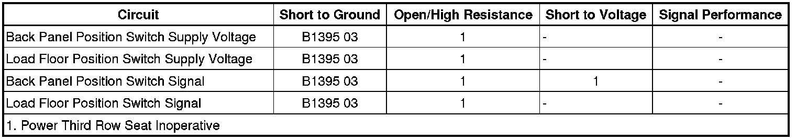

Rear Seat Module
DTC B1395 (Rear Seat Module)
Diagnostic Instructions
* Perform the Diagnostic System Check - Vehicle (Initial Inspection and Diagnostic Overview) prior to using this diagnostic procedure.
* Review Strategy Based Diagnosis (Initial Inspection and Diagnostic Overview) for an overview of the diagnostic approach.
* Diagnostic Procedure Instructions (Initial Inspection and Diagnostic Overview)provides an overview of each diagnostic category.
DTC Descriptor
DTC B1395 03
- Device Voltage Reference Output Circuit Voltage Bellow Threshold
Diagnostic Fault Information

Circuit/System Description
Battery positive voltage is supplied at all times to the seat load floor position switch and the back panel position switch by the rear seat module (RSM). The RSM monitors these battery positive voltage supply circuits for the protection of internal circuitry of the module.
Conditions for Running the DTC
The ignition must be in the ACCESSORY, RUN or CRANK power mode.
Conditions for Setting the DTC
This DTC will set only when the RSM detects that the device switch supply voltage is less than 3 volts.
Action Taken When the DTC Sets
* The RSM will not allow seat operation.
* If this condition occurs during seat operation, the operation will be cancelled.
Conditions for Clearing the DTC
The DTC will clear when the RSM detects that the device switch voltage is greater than 3 volts.
Diagnostic Aids
* When the rear folding seat back panel is in the folded position, the load flood position switch is closed to voltage.
* When the rear folding seat is in either the seated or stowed positions, the back panel position switch is closed to voltage.
Reference Information
Schematic Reference
Rear Seat Schematics (Rear Seat Schematics)
Connector End View Reference
Component Connector End Views (Connector Views)
Description and Operation
Power Seats System Description and Operation (Folding Seat) (Power Seats System Description and Operation (Folding Seat))Power Seats System Description and Operation (Front Seat) (Power Seats System Description and Operation (Front Seat))
Electrical Information Reference
* Circuit Testing (Component Tests and General Diagnostics)
* Connector Repairs (Component Tests and General Diagnostics)
* Testing for Intermittent Conditions and Poor Connections (Component Tests and General Diagnostics)
* Wiring Repairs (Component Tests and General Diagnostics)
Scan Tool Reference
Control Module References (Programming and Relearning)
Circuit/System Verification
1. Ignition ON, observe the scan tool load floor switch parameter with the seat back panel in the folded position. The reading should be INACTIVE.
2. Ignition ON, observe the scan tool back panel position switch parameter with the seat in either the seated or stowed positions. The reading should be ACTIVE.
Circuit/System Testing
1. Ignition OFF, disconnect the X2 harness connector at the rear seat module.
2. Ignition OFF, test for infinite resistance between the supply voltage circuit terminal D1 and ground.
• If not the specified value, test the supply voltage circuit for a short to ground.
3. Test for infinite resistance between the signal circuit terminal C10 and ground.
• If not the specified value, test the signal circuit for a short to ground.
4. Test for infinite resistance between the supply voltage circuit terminal D2 and ground.
• If not the specified value, test the supply voltage circuit for a short to ground.
5. Test for infinite resistance between the signal circuit terminal C11 and ground.
• If not the specified value, test the signal circuit for a short to ground.
6. If all circuits test normal, replace the rear seat module.
Repair Instructions
Important: After performing this diagnostic test and the electrical or component repairs have been completed, the folding seat may be in an unknown state and out of calibration with the RSM. The RSM must be calibrated before the folding seat system will operate. Refer to Power Folding Seat Calibration (Programming and Relearning) .
Perform the Diagnostic Repair Verification (Verification Tests) after completing the diagnostic procedure.
Control Module References (Programming and Relearning)for RSM replacement, setup, and programming